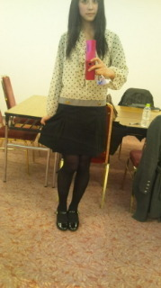

| 2012/01 31 Tue | NACK５♪( ｏ・ω・) ノ)) |
遅くなっちゃったけど…
NACK５に出演しましたっっ(ゝω・´★)
ベビーフェイス
 なのにちょっと毒舌で自由人なベビたん。
なのにちょっと毒舌で自由人なベビたん。
なのにちょっと毒舌で自由人なベビたん。
最年長でお姉さんのはずなのに中学生にいじられるゆみ姉。
(あっ NACK５中はゆみたん。)
個性的すぎるっ(*≧∀≦*)
と 自由で、楽しい時間を過ごしました！
あと、パーソナリティーのギンナナ金成さん、椿姫彩菜さん、お二方とも
びっくりするくらい優しくて、面白くて…
しかも初のラジオで緊張していた私たちに優しく話しかけて下さって…
ありがとうございました！
日曜のことなのにまだ楽しさに浸っている自分。笑
そういえば！①
バンジージャンプとスカイダイビング本当にやりたいんですょ…(´・ω・｀)
みんなやりたくなーい
って言うけど本当は照れてるだけなんじゃん？
本当はみんなやりたいんだよ！
って言ったらいやいやいやいや…
っていつも言われる

えー(；´д⊂)
だれか行きたい人いないのかな…
探してみるっ(｀・ω・´)ゞうん
そういえば！②
SHELLYさんは憧れです。(*^_^*)
ライバルなんてゅっちゃったけど…
どうしよ。(;´д｀)
喋り特訓して欲しいなぁー♪(ｏ・ω・)ノ))
そういえば！③
大人な私服で行きました
 きらりーん
きらりーん
きらりーん

中坊には見えないっ(はず。)
それより中坊って古いんですね…(´・ω・｀)
軽くショックを受けた私。orz
もう使わないー

かも。(笑)
そういえば！④
能天気。
深く考えすぎない、ポジティブシンキングです(・∀・)
いや、
もちろんちゃんと考えるときもあるよ？(；´д⊂)
………うん。
あるよあるよ！
そういえば！⑤
ラジオ聞いてなかった人はよくわかんないブログだったと思うので…
ちょっと解説。
① 挑戦したいこと
② AKB48さん以外でのライバル
③ 私服かーらーのっ自分のポジション
④ 自分の好きなところ
⑤ 解説
そういえば！⑥
バンジージャンプやりたい人いたー(*≧∀≦*)
それは〜…
せいらりんっ
行ってやる！d(｀・ω・´)笑
そういえば！⑦
さっきまでゆきなとご飯食べてたのー♪(/ω＼*)
まぁご飯ってゅってもポテトとミネストローネだけど( ´艸｀)笑
いっぱい話せて楽しかったねー(*^ω^*)
そういえば！⑧
ちょっとだけ質問返しだょっ
Ｑ＆Ａだぜぃっ
Ｑ 乃木坂は仲いい？
誰が一番仲よし？
Ａ 乃木坂は仲よしすぎて困りますねー(σ*´∀｀)
こんなアイドルグループいないんぢゃ？
ってくらい

だから一番は決められないけど…(´・ω・｀)
同い年の中３組はいつもべったりですね
Ｑ タメでいいかな？
あと、学校でのちはるんってどんな感じ？
クラスメイトにはどんな風に思われてるの？
Ａ タメでいいですよっ(*^_^*)
学校ではー、
乃木坂のときよりクール系だと思う！笑
(……自分で思ってるだけかも(笑))
学校のみんなには大人っぽいってよく言われるけど…
自分ではよくわかんない(・・;)
んー
どぉなんだろう(´・ω・`)?
でわっ
るんるんっ
ばいるんっ
ちはるんっ
♪(*´ω｀)ノ))
♪(ｏ・ω・)ノ))
NACK５は、ちょくちょく改善点もあったけど！(´・ω・｀)
すごくいい思い出ですっ
楽しかったー♪(/ω＼*)
またいつかラジオ行きたいなぁ…てへぺろ
ちはるん
コメント(24)
2012/01/31 21:47